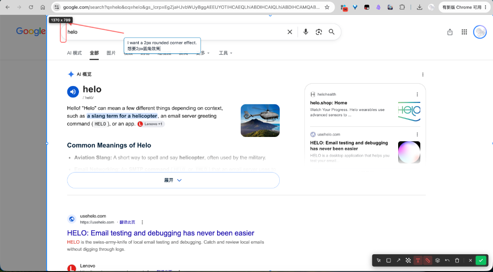
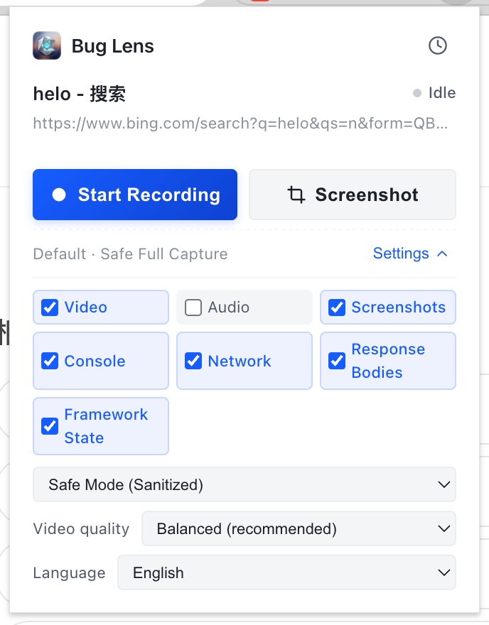
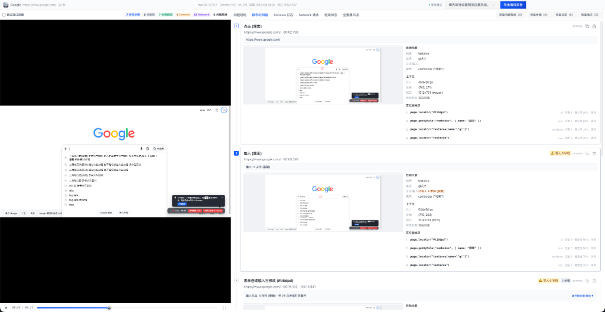

01
Step 01. 一键录制或独立截图标注
现场捕获录制模式下自动采集点击红圈、Console、网络请求与组件状态（Option/Alt+S 快捷标记异常现场）；无需录屏时可用独立截图工具框选测量、画箭头并添加中英批注。


一键录制或独立截图标注，自动捕获操作轨迹、React/Vue 组件状态、Console 报错与网络报文，生成可直接交付给 Cursor、Claude Code 与 Antigravity 的结构化提示词与离线证据包。
无需配置后端或额外 CLI，安装扩展即可开箱完成「录制 / 截图 → 预览策展 → 粘贴 Prompt → 采纳补丁」闭环。
录制模式下自动采集点击红圈、Console、网络请求与组件状态（Option/Alt+S 快捷标记异常现场）；无需录屏时可用独立截图工具框选测量、画箭头并添加中英批注。


在证据预览工作区审查时间轴、删改冗余步骤或截图、生成 Playwright 复现脚本；点击导出自动下载离线 ZIP 并将 AI 提示词写入剪贴板。

支持精简路由（Compact，节省上下文 Token）与完整指引（Full）两种模板，中英双语与宿主系统命令自动适配，导出即写入剪贴板。
AI 依据时间戳交叉比对 500 响应报文、组件响应式状态与 SourceMap 定位到 src/components/BillingTable.vue:39，输出结论先行报告与最小化代码补丁：
// src/components/BillingTable.vue:39 - const sessionId = resp.data.paymentGatewaySession.id; + if (!res.ok) throw new Error(`HTTP ${res.status}`); + const sessionId = resp?.data?.paymentGatewaySession?.id ?? null;
不仅是一键录屏，而是围绕「可复现、可定位、可策展、绝对私密」构建的全链路调试证据引擎。
将点击红圈截图、DOM 样式、Console 错误堆栈、XHR/Fetch 报文与 Tab 录屏精准对齐至同一毫秒级时间轴。
高精度还原 Vue 2、Vue 3 与 React 组件源码文件路径与行号，深度捕获触发异常前后的 Props 与响应式 State 快照。
使用 Option/Alt+X 随时框选网页区域，支持像素尺寸测量、划线箭头与流式自动折行发光批注，快速向 AI 描述 UI 调整。
专门适配 Chrome DevTools 移动端模拟：贴边磁吸胶囊、真实缩放比裁剪与 Pointer Events；录制期间自动追踪衍生新标签页。
预览页支持删改步骤、移除截图、撤回重做、左右分栏拖拽持久化，以及在严格 CSP 下 file:// 双击即开的离线 HTML 报告。
无任何后端服务器。所有录制与打包均在本地浏览器完成，安全模式自动脱敏 Authorization、Cookie、密码框与敏感缓存。
扩展本身已可独立运行；如果你使用 Claude Code、Cursor、Codex 或 Antigravity，只需安装官方 bug-lens-triage Skill 与原生 Rust CLI，AI 即可直接流式解压并按需索引大型 ZIP 证据包，彻底告别临时解析脚本。
$npx skills add Aoyia/bug-lens-skill -g -y
$bash
~/.agents/skills/bug-lens-triage/scripts/install.sh
>powershell -ExecutionPolicy Bypass -File
"$env:USERPROFILE\.agents\skills\bug-lens-triage\scripts\install.ps1"
13.5 MB 真实录屏包 · 4,843 日志 · 522 请求 · 6.20 MB JSON · 5 次中位数
open_pack
全局概览与索引
timeline
核心时序主线
query_network
网络摘要切片
持续高频迭代，同步适配最新前端框架、移动端仿真调试与 AI Agent 工作流。
不会。Bug Lens 是一款 100% 本地运行的 Chrome 扩展，没有任何后端服务器。所有录制、日志解析与打包导出均在本地浏览器内完成；开启安全模式后还会自动脱敏 Authorization、Cookie、密码字段与敏感本地存储。
包含可直接粘贴给大模型的 AI_PROMPT.md、双击即可离线查看的 report.html、点击红圈及问题现场截图、DOM 样式与框架状态快照（data/session-data.js）、网络详情（data/network-details.js）、Playwright 复现脚本（reproduce.spec.ts）以及 WebM 录屏。
不需要。安装 Chrome 扩展即可开箱使用全部录制、截图标注、离线报告与 AI Prompt 导出功能；bug-lens-triage Skill 与原生 Rust CLI 是可选的进阶加速组件，能让支持的 AI 编程助手更高效地流式索引大型证据包。
导出提示词兼容任意 AI 编程工具与对话助手（Cursor、Claude Code、Codex、Antigravity、Windsurf 等）；网页捕获适用于所有 Web 应用，并对 Vue 2、Vue 3 与 React 提供组件源码文件路径及响应式状态深度解析。
最低要求 Chrome / Edge 125+（Manifest V3）。默认快捷键：Cmd/Ctrl+Shift+Y 打开控制面板，Option/Alt+R 一键开始录制，Option/Alt+X 独立截图标注，录制中按 Option/Alt+S 快速标记异常现场（可在扩展设置页自定义）。